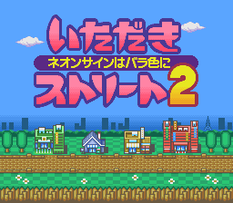

Itadaki Street 2
Itadaki Street 2 (いただきストリート2) is a Super Famicom (SNES) game only ever released in Japan.
Developed by Enix, it was designed by Yuji Horii, the designer of the Dragon Quest games.
 |
 |
 |
It’s a board game reminiscent of Monopoly, where up to 4 players roll a dice to move, buy properties and draw cards on specific spaces. Players can also buy stocks of the different districts in order to increase the value of their properties.
The goal of the game is to reach a target net worth and go to the bank first.
The game features an auction system, a stock market and a few minigames.
Bingo
On some of the 15 boards, there is a casino space.

One of the 4 minigames in the casino is a bingo:
 |
 |
 |
Having recently watched Matt Parker’s video about the Bingo paradox (You’re more likely to win with a row than a column), I was curious to see if that version of bingo had any similar biases. Let’s take a look.
Rules
In this version of Bingo, each player gets a card with 25 numbers ranging between 1 and 50. The columns are labeled B, I, N, G, and O.
Column B has numbers between 1 and 10.
Column I has numbers between 11 and 20.
column N has numbers between 21 and 30.
Column G has numbers between 31 and 40.
Column O has numbers between 41 and 50.

The player who landed on the casino space, and only that player, gets the free space at the center of their card. In this example, Green gets the free space:

Numbers are drawn and marked on the cards until one or more players gets a bingo (5 numbers in a row, a column or a diagonal).


The numbers marked in red are the lines one away from a bingo (the game calls it riichi, just like the mahjong term)
Each winner gains money (G) based on how many balls were drawn, and a multiplier based on how many bingos that player got:
| Single bingo | ball_count×6 |
| Double bingo | ball_count×6×2 |
| Triple bingo | ball_count×6×4 |
| Quadruple bingo | ball_count×6×8 |
The quadruple bingo is extremely rare as it requires the following star-shape setup, and then drawing the central number:

The player with the free space cannot get a quadruple bingo.
In order for the game to be fair, both the cards and the draw need to be truly random.
Random Number Generation
As explained in this post about A Link to the Past or this video about Super Mario World, there is no built-in random number generator on the SNES. It was up to the developer to come up with their own algorithm. It often uses a seed, that is, an arbitrary number as input to generate a random number. That seed gets updated every so often, to keep the output seemingly random.
In Itadaki Street 2, the RNG seed is a 2-byte number located at address $02 in SRAM (accessed with $700002 by the CPU).

Seed 0x86DB (the SNES being little-endian, I know it should be 0xDB86 but for readability I’ll treat every seed as big-endian in my explanations)
That seed being only 2 bytes, it can only take on 65536 values: 0x0000 to 0xFFFF.
Card Generation
I located the code that generates the bingo cards. Here’s the ASM code of the two routines.
The first call generates 5 numbers between 1 and 10 at address $7F8280. They become the first column of the first card (stored at address $7F8000). The process repeats, adding 10, 20, 30, and 40 respectively to the numbers for each subsequent column. Finally, the whole thing is repeated for each card, always in the same order: red, yellow, blue, green.


Because the whole thing uses a single RNG seed to generate the four cards and the algorithm is deterministic (the same seed always generates the same numbers in the same order), that means there’s exactly 65536 possible games of bingo.
Each game can thus be uniquely identified by its seed. You can see the RNG seed of a given game in memory by pausing on the Casino entrance screen with the two ladies.
From the ASM code, I recreated the algorithm in Java and was able to generate accurately all those 65536 games. Here is seed 86DB:

If you want all the possible 65536 games, here’s the CSV file (25MB) or a text file (28MB) in a more human-readable format.
Note: As the game only shows the cards after having placed the free space, I had a look in the ram and confirm that the number behind the free space are correct. The game replaces it with 0 right after generating the cards.
Good card, Bad card
Just like I did for the card generation, I tried to replicate the ASM code that draws the numbers but could only make it work for one seed. Because there are many frames between each ball and the random seed gets updated multiple times (every time there are dialog boxes, like for a riichi, it updates the seed) , it didn’t work for any other games.
Now, I was able to see something interesting in the game code that led me to believe that the game may not be fair.
| Card A | Card B |
|---|---|
 |
 |
Can you guess which one of these two cards is good and which one is bad?
Let me tell you what the draw algorithm does.
First, the pool of possible numbers to draw from is made of all the numbers on the 4 cards. If a number is not on any card, it cannot be drawn.
Until a bingo happens, the game repeats the following steps:
- A. Pick a random number from the pool
- B. Check if that number has already been drawn
- B1. Not drawn before: that’s the number drawn
- B2. Already drawn: keep incrementing this number by 1 until it finds a number never drawn before (50+1 loops back to 1)
The part where it increments by 1 (B2) means that the draws are not independent, therefore the numbers are not equally likely to show up. The algorithm creates a bias that advantages consecutive numbers.
Imagine we have the following card. For simplicity, there’s only one card in that game.

On the first draw, each number has 1 chance out of 25 to be picked (step A) and drawn (step B1).
Let’s say we draw the number 5.
Now the odds are as follows:

The number 6 has 2 chances out of 25 to be drawn. It is two times more likely to be drawn, either when step A picks 6 (obviously) or picks 5, which would become 6 at step B2.
Let’s assume we draw the number 6.
Now the odds are as follows:

The number 7 has 3 chances out of 25 to be drawn. It is three times more likely to be drawn, either when step A picks 7 (obviously) or picks 6, which would become 7 at step B2, or picks 5 which would become 7 after looping step B2 twice.
Here’s one way to phrase that: every time a number gets drawn, the odds for that number are added to its consecutive number, if it’s in the draw pool. (1 being considered consecutive to 50)
Because of the way bingo cards are laid out, most consecutive numbers are in the same columns. In fact, only 5 pairs of consecutive numbers are in different columns: (10,11), (20,21), (30,31), (40,41), (50,1).
So when there’s a pair of consecutive numbers, drawing the smaller one increases the odds of drawing the bigger one, therefore increasing the odds of getting a bingo in that column. The pairs (10,11), (20,21), (30,31), (40,41) also increase the overall chance of a bingo but less, because they are not in the same column, row or diagonal. (50,1) are in the same diagonal though.
I don’t have the mathematical knowledge to figure out how much of an advantage you get by having consecutive numbers on your card (If you do, be my guest) but I have programming knowledge and I’ve already generated all the possible games of this bingo.
So I ran a simulation with the actual bingo cards from the game and that biased algorithm.
Simulation
I took the first 32768 (half) of all the possible seeds (0x0000 to 0x7FFF) and ran 10000 games for each.
That’s a total of 327 680 000 games.
I spread the free space equally between the four players (2500 games each for every seed).
For each game, I recorded the following data :
- number of wins (with and without free space) per player
- money gained (with and without free space) per player
- average number of balls drawn (with and without free space)
- number of bingos (separated by single, double, triple and quadruple) per player
- number of winners (separated by count: 1, 2, 3 or 4)
Here are the data: Google Sheets (12MB) or Excel (19MB).
Stats: Win rates
I calculated the win rate for each player for each seed. While the four players have, across all 32768 seeds, an average win rate of 28.68%, the win rate for any given seed differs between players.
For example, seed 1F68 gives a win rate of 26.07% for Yellow and 36.5% for Blue. That’s the biggest win rate difference I found.
By looking at the cards and knowing what we know of the draw algorithm, we can intuitively see why.

On the sides, I color-coded the sequences of consecutive numbers. It’s clear that 4-number and 5-number sequences have an advantage over 2-number and 3-number sequences.
The two cards I showed earlier were the blue card (A) and the yellow card (B).
Here’s another example, seed 2AAF gives a win rate of 35.61% for Red!

Here’s the worst win rate I found: seed 1DAE gives a 23.31% win rate for Red.

That card only has two 3-number sequences and one 2-number sequence!
On average, having the free space increases the win rate by 6.68%.
With the free space, the lowest win rate increase is 1.62% (Yellow, seed 26ED) and the highest is 12% (Green, seed 0514).


I’m not sure how to explain that difference. It seems that the good cards are “less” improved by the free space than the bad cards.
Out of curiosity, I took one of the seed with a good card and replaced it with a “cheated” card. A card with the numbers 6 to 15, 26 to 35, and 46 to 50. That card had a win rate of 41%.
Stats: Multiple bingos
Here’s the distribution of multiple bingos in percentage:
| single | double | triple | quadruple |
|---|---|---|---|
| 97.2607000004 | 2.7202 | 0.01909996 | 0.0000000396 |
Weirdly, the 13 quadruple bingo I saw out of these 327 million games are not spread evenly among players: Red and Green got 1, Yellow got 4 and Blue got 7, all in different games. Are these numbers significant? I can’t tell, it’s possible that 10000 games per seed is too small of a sample.
That would make the odds of a quadruple bingo less than 1 in 25 million.
Talking about quadruple bingo, like I said before, the setup for it is as follows:
For any given card in any given game, that setup is only possible if it doesn’t result in a bingo on any of the other 3 cards. So I analyzed all the 65536 possible games looking for that situation.
| SEED COUNT | 1P | 2P | 3P | 4P | TOTAL |
|---|---|---|---|---|---|
| RED | 49 | 1062 | 11238 | 48230 | 60579 |
| YELLOW | 44 | 1086 | 11051 | 48230 | 60411 |
| BLUE | 39 | 1083 | 11214 | 48230 | 60566 |
| GREEN | 53 | 1067 | 11392 | 48230 | 60742 |
How to read this?
There are 39 games where only Blue can get a quadruple bingo.
There are 53 games where only Green can get a quadruple bingo.
There are 48230 games where all four players can get a quadruple bingos.
There are 1062 where Red and another player can get a quadruple bingos.
I didn’t separate all the possible pairing of players for the games where 2 or 3 players have a possible quadruple, but we can still see that the distribution is not even.
Only 7 seeds create games where no quadruple bingos are possible.
Stats: Draws
On average, the number of draws is 20.90 balls. That’s 20.74 in games where the free space player wins and 21.05 where they don’t. That means that winning with the free space requires less draws, but it also means that it lowers the gains (less draws = less gains) since the reward is based on the number of draws. That decrease in gains is probably negligible compared to the increase in gains from the increased win rates of the free space.
Stats: Gains
Since we know the average number of balls drawn, we can calculate the gains, taking into account the multipliers for multiple bingos (1,2,4,8):
The base reward is 20.9×6 = 125.4
| single | double | triple | quadruple |
|---|---|---|---|
| 125.4 | 250.8 | 501.6 | 1003.2 |
We can now multiply these values by the odds of getting each one and add it all, and we get an expected gains of 128.88G.
Now multiply that by the average win rates per player (with and without free space):
| AVG GAINS | NO FS | FS | TOTAL |
|---|---|---|---|
| RED | 35.84228965 | 43.55868398 | 37.77138823 |
| YELLOW | 35.83310549 | 43.57944309 | 37.76968989 |
| BLUE | 35.82781763 | 43.57678169 | 37.76505864 |
| GREEN | 35.83705872 | 43.51114563 | 37.75558044 |
| AVERAGE | 35.83506787 | 43.5565136 | 37.7654293 |
So on average, every player wins 37.76G per game (35.83G without the free space and 43.55G with the free space).
Conclusion
If I made any mistakes in my methodology or calculations, feel free to let me know. If you have the mathematical knowledge and want to do the theoretical analysis of this game, don’t hesitate. Anything that could confirm or infirm, and explain my results is welcome.
I’m also curious to know if the Bingo paradox still holds true with this version of bingo.
The odds of winning are evened over thousands of games but any given game, unlike in real bingo, is not balanced between the players.
How many times is bingo played in a game of Itadaki Street 2? Definitely not thousands, not even dozens of times. We can safely say that the game is not fairly designed.
The draw algorithm they used has one benefit. Every draw has a fairly constant runtime. In terms of CPU clock cycle, incrementing a value up to 50 times is less costly than generating and updating the seed that many times.
At least, the worst case runtime is manageable. An easy improvement would be to remove the drawn number from the pool of available numbers. That’s odd (pun intended) that they didn’t do that.
Anyway, the casino in Itadaki Street 2 has three other mini-games, that I may analyze in the future.
| Slots | Memory | Roulette |
|---|---|---|
 |
 |
 |


Share this post: